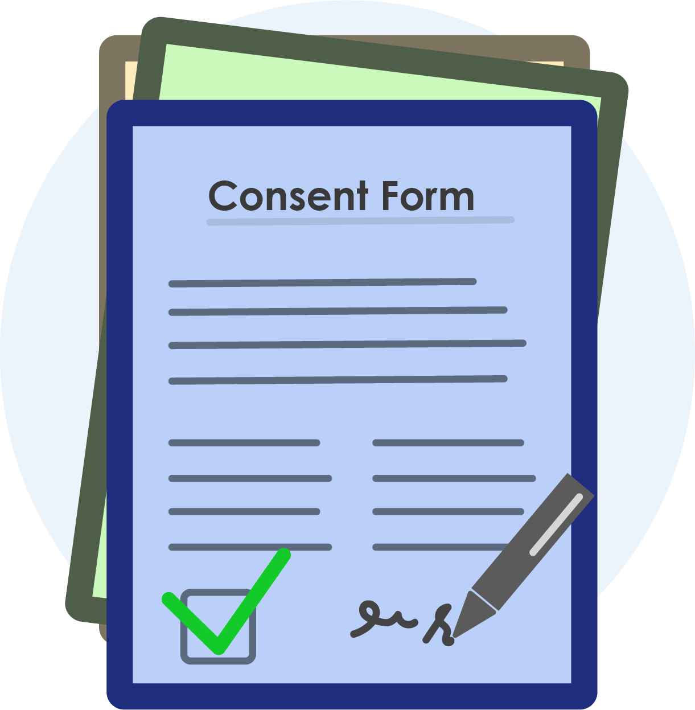

Understanding Parental Consent in COPPA: Protecting Your Child Online
Understanding Parental Consent in COPPA: Protecting Your Child Online
The Children's Online Privacy Protection Act (COPPA) recognizes the importance of parental involvement in safeguarding children's privacy online. This principle is anchored in the requirement for **verifiable parental consent** before websites and online services can collect, use, or disclose personal information from children under 13.
What is parental consent under COPPA?
Parental consent, under COPPA, refers to a parent or legal guardian knowingly and voluntarily authorizing a website or online service to collect, use, or share their child's personal information. This authorization must be **verifiable**, meaning the website must have a mechanism in place to confirm that the consent is coming from the actual parent or guardian.
Why is verifiable parental consent important?
- Protects children's privacy: Children may not fully understand the potential risks of sharing their personal information online. COPPA ensures that parents have control over their child's data and can make informed decisions about its collection and usage.
- Promotes transparency and accountability: Verifiable parental consent requires websites to be upfront about their data collection practices and to obtain explicit permission from parents before engaging in certain activities.
- Reduces legal risk: Websites that fail to comply with COPPA's parental consent requirements can face significant fines and penalties from the Federal Trade Commission (FTC).
How can websites obtain verifiable parental consent?
COPPA allows for various methods of obtaining verifiable parental consent, including:
- Email verification: The website sends an email with a unique link to the parent's listed email address. The parent must click the link to confirm their consent.
- Credit card verification: The website charges a small amount (usually refundable) to the parent's credit card and then verifies the billing information.
- Two-step opt-in: The parent enters their information on the website and then receives a separate call or email to confirm their consent.
- Pre-approved contacts: Parents can register with a third-party verification service that confirms their identity and grants permission for specific websites to collect their child's information.
What information should a website provide parents before requesting consent?
Before requesting parental consent, websites must clearly and concisely explain:
- The types of personal information they collect from children.
- How the information will be used.
- With whom the information may be shared.
- The parent's rights to access, review, and delete their child's information.
- The method used to obtain verifiable parental consent.
Remember:
- Parents have the right to revoke their consent at any time.
- Websites must delete children's personal information upon request.
- The FTC provides resources and guidance for both parents and websites regarding COPPA compliance.

Image Source: Aim High Impact
Click here to visit the website.
Citation:
Federal Trade Commission (FTC): Complying with COPPA: Frequently Asked Questions. Federal Trade Commission. June 25, 2020.
https://www.ftc.gov/business-guidance/resources/complying-coppa-frequently-asked-questions
PRIVO: About the PRIVO Consent Management Platform. PRIVO. https://www.privo.com/privo-privacy-policy